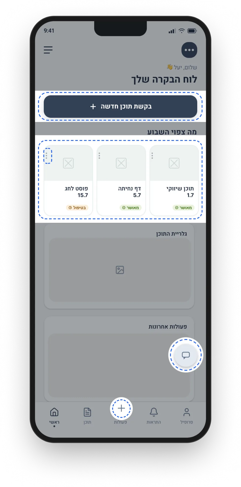
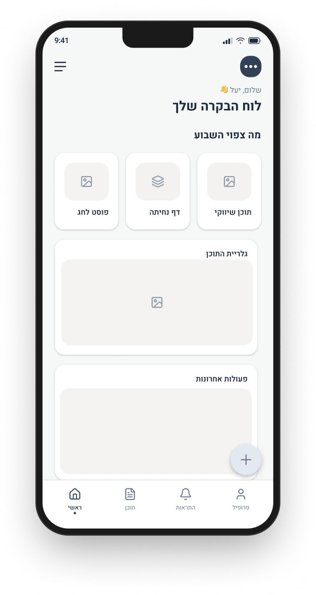
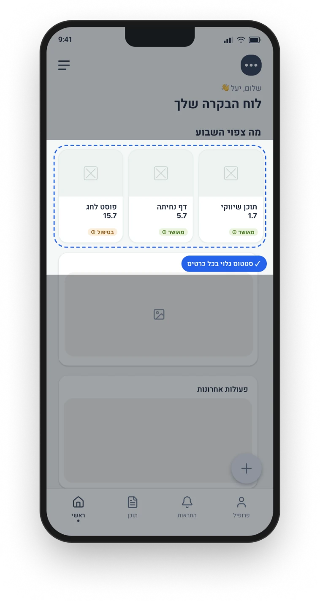
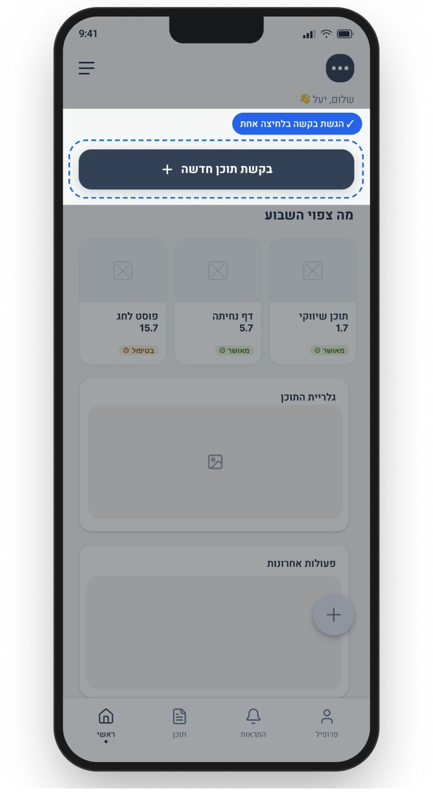
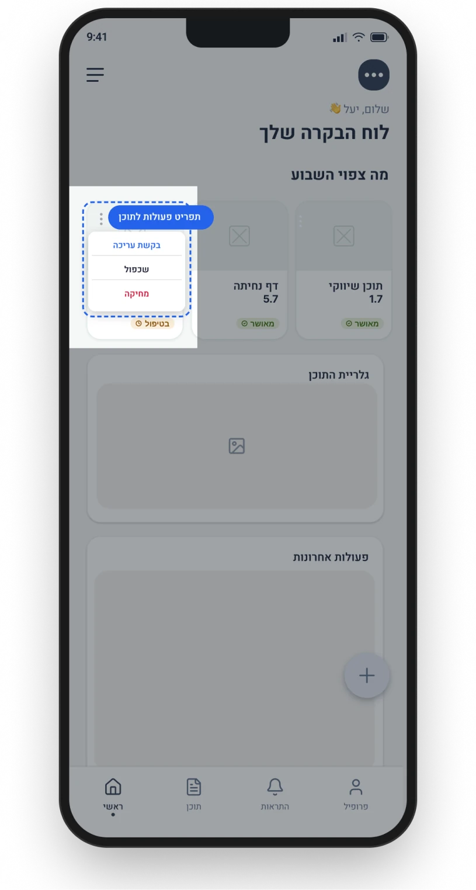
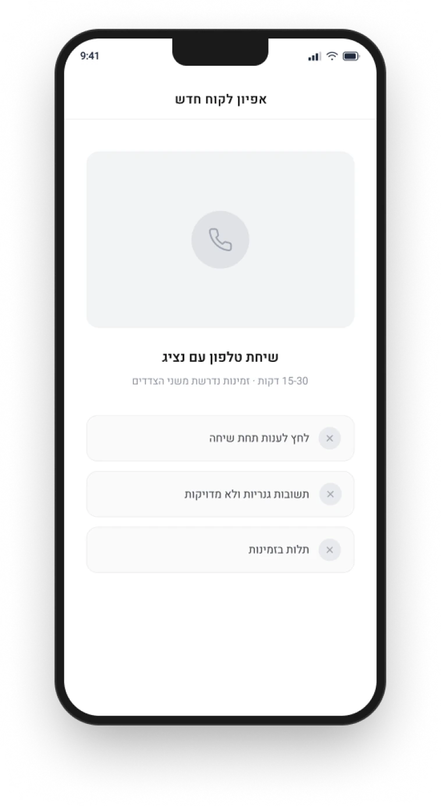
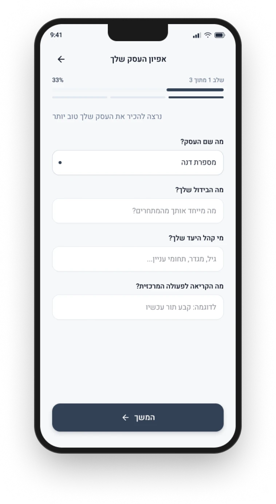
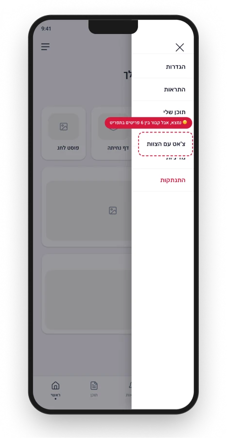
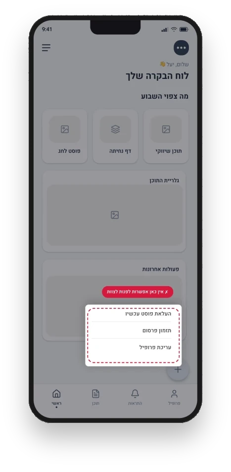
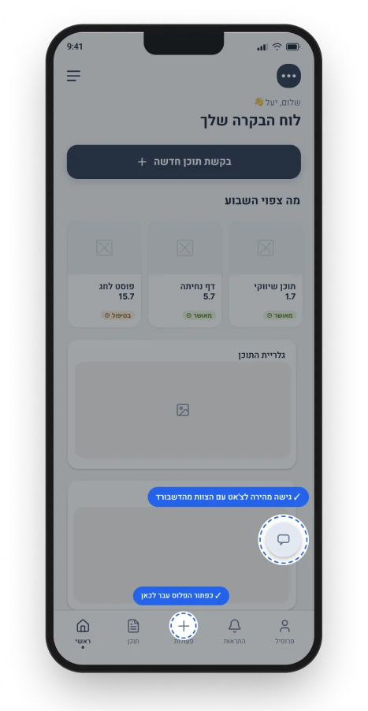

An Interface That Didn’t Speak the User’s Language
Customers were bypassing the SaaS system and going straight to the CS team, because they couldn’t track request status, couldn’t find how to submit a new content request, and didn’t know how to communicate with the team inside the system. I identified the friction points and led four product solutions.
Open project file in FigmaIdentifying Friction Points and Improving UX
A digital marketing platform for small and medium businesses. Identifying patterns of customers bypassing the system, and solutions that reduced friction and improved the user experience.
My Role
In my role at a B2B startup, I worked across both Creative and Customer Success. On the CS side, that meant day-to-day work with the platform on behalf of subscribers: helping with the interface, running usage walkthroughs, onboarding new subscribers, and more. The technical build itself was handled by the development team. I analyzed customer calls, support tickets, and live onboarding sessions to surface friction points among small and medium business owners. Alongside this, I also created visual content for businesses across different industries, from beauty and self-care to doctors, coaches and therapists, lawyers, and more, content built for digital platforms, including posts, landing pages, and brand websites. This case study focuses on the pain points and solutions that stood out most in subscribers' everyday use of the system.
Discovery calls
A business discovery call with a client, to ground thinking around message-market fit
Live onboarding sessions
Revealed in real time exactly where customers were getting stuck
Inbound requests
Revealed recurring patterns: the same questions, the same frustrations
Customers Were Bypassing the System
Instead of using the platform, they bypassed it, creating unnecessary load on the team and hurting the user experience.
In a fast-paced startup environment, I chose a lightweight, real-data-driven approach over a formal user journey mapping process or polished wireframes. I identified recurring patterns directly from customer calls and inquiries, and drafted a solution direction in writing that was reviewed with the development team before moving forward.
The guiding logic stayed consistent across every solution. In most cases, customers weren't bypassing the system because they preferred other tools. They did it because the system didn't give them a visible or accessible enough answer. So every solution was first tested against this question: does it keep the customer inside the interface, instead of pushing them out of it.
Decisions also kept evolving based on real user response. The content-request button, for example, was evaluated with subscribers after launch, and since the feedback showed the process was too long, it was later streamlined into a simpler, shorter flow.
Each solution was handled independently, based on the situation at the time, rather than planned upfront as one unified initiative, but all of them stemmed from the same working hypothesis.
All the Changes at a Glance
A summary of the solutions. Scroll down for the full breakdown of each one.

✓ Submit a request in one click ✓ Status visible on every card ✓ Submit an edit request from the content card ○ Plus button moved here ○ Quick access to team chat from the dashboardThe customer didn't reach out because they didn't understand. They reached out because they couldn't see.
Customers had no visibility into what was happening with the request they'd submitted to the creative team, and this lack of transparency created anxiety and repeat inquiries to the CS team. A clear status view was added directly in the interface.


Repeat inquiries about request status dropped by roughly 20% after implementation.
When the path to an action is too long, the user gives up.
The problem: There was no way to submit a new request through the interface, only an edit request for existing content selected from the gallery. Subscribers who wanted something entirely new reached out over WhatsApp, which created load on the CS team, added an unnecessary step before the request reached the creative team, and at one point accounted for roughly 40% of inbound inquiries.
The solution: A prominent primary button was added to the dashboard for submitting a content request digitally and independently. Every subscriber could now complete the action easily, which made them more self-sufficient and confident in the interface and reduced the load on the team. In addition, a quick option was added to submit an edit request directly from the content itself, instead of through the unintuitive "Help" button, which also cut down on the related inquiries that used to go through WhatsApp.
Next up: Following feedback from subscribers that the process is too long and cumbersome, it will be streamlined into a simpler, shorter flow.
Request for entirely new content
The interface only had "Edit" for existing gallery content
Reach out on WhatsApp
CS routes the inquiry onward
Handed off to the creative team
Open existing content in the gallery
Tap the Help button
Reach out to the creative team
Write the request + attach images
Send to the team


In the month the direct request button launched, roughly 13% of subscribers engaged with the action.
Questions about brand identity require thought, not a quick response.
The initial discovery process included complex questions about brand voice and differentiation, and required a 15–30 minute call that depended on the client's availability and openness, which often meant we got shallow answers. This hurt the accuracy of the content produced, created repeat conversations with subscribers, and drained the workflow while also causing frustration. After user research with subscribers, I converted the process into a digital form the client fills out after joining, with all the information saved to their profile.


The move to a form created a natural filter: most clients completed the process independently, freeing up the team’s time to focus on those who genuinely needed a deeper discovery call.
Customers used what felt familiar and safe. They couldn't find the interface's chat.
The in-app chat existed, but no one saw it, since it was tucked away in a hidden menu, so customers reached out over WhatsApp because that's what they knew. To get customers operating within the interface, I proposed moving chat access to a prominent, familiar location. The choice of a floating position came from the fact that it's a familiar user behavior from other interfaces. There was no need to teach users a new pattern, just to lean on an intuitive process they already knew, used, and trusted.



The goal: encourage customers to stay within the interface instead of switching to WhatsApp, with full documentation and better continuity for the team.
The Common Thread Across All Solutions
Some solutions were implemented in full. Others remain prioritized on the product roadmap. The single redesigned home screen simultaneously solved 3 of the 4 identified problems (request status, creating a new request, and reaching the team), demonstrating that one focused solution can replace several separate fixes.
Fewer repeat inquiries
Reduced load on the CS team by surfacing information directly in the interface
More accurate discovery
A digital form produced deeper answers and more genuine marketing content
Communication through the right channels
Reduced off-platform communication, redirected back to the tools built for it
Every solution was grounded in real data gathered from the field. Direct access to the customer is the right starting point for any improvement to the user experience.